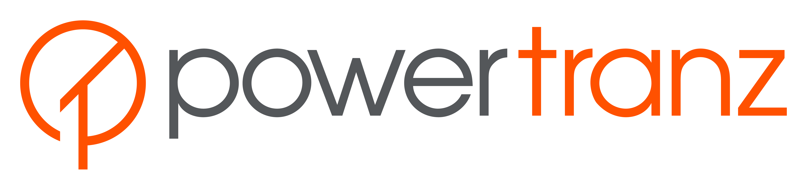
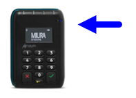

Software Development Kit (SDK)
Users Guide - Windows
Version: 1.0.4 (in progress)
May 11, 2018
For PowerTranz SDK for Windows version 3.0.0
Document Control
Document version numbering is represented by major and minor revisions of this document. The number to the left of the period describes the number of major reviews (including both scheduled and unscheduled) from the date of original issue. The numbers to the right of the period description are the number of minor reviews or amendments from the time of issue, or the last major review.
| Version | Description | Author |
|---|---|---|
| 1.0 | First version of the document. [DRAFT] For revision. | |
| 1.0.1 | Added extra notes to WiFi Connectivity; Parameter OrderID to OrderIdentifier | RMailhot |
| 1.0.2 | Updated branding; Added Orders and Single Searches; Updated to include connectivity for Wi-Fi and USB | RMailhot |
| 1.0.3 | Added Clearing text to avoid burn-in | RMailhot |
| 1.0.4 | Revisions for SDK v3.0.0 ***** in progress ***** | RM, IE |
Copyright & Trademark © 2017 PowerTranz. All rights reserved. No part of the contents of this book may be transmitted or reproduced in any form or by any means without the written permission of PowerTranz.
This artivle contains proprietary information. All data submitted provided in reliance upon its consent not to use or disclose any information contained herein except in the context of its business dealings with PowerTranz ("PTZ"). The recipient of this document agrees to inform present and future employees, contractors, etc. of recipient of the proposal who view or have access to its content of its confidential nature.
Introduction
PowerTranz SDK is a complete solution for mobile payment acceptance. It provides card present (EMV compliant and contactless capable) and modification types of transactions as well (Void, Refund and Capture). It effectively abstracts all the payment related complexity allowing developers and integrators to focus on their distinctive business logic and added value.
This document is designed to guide system development and application design from early stages.
Document Structure
This document presents an initial overview of the logical architecture highlighting the SDK and the related components.
It also presents the typical operation flows and details the SDK interface and data dictionary.
Terms and Concepts
The following table describes the terms and acronyms used throughout this document.
| Term | Acronym | Description |
|---|---|---|
| Application Programming Interface | API | A set of calling conventions that defines how a service is invoked through software. An API enables programs written by users or third parties to communicate with certain vendor-supplied software. |
| Europay™ Mastercard™ Visa™ | EMV | An acronym describing the set of specifications developed by the consortium EMVCo™, which is promoting the global standardization of electronic financial transactions – in particular, the global interoperability of chip cards. The consortium now includes JCB, Amex and China Union Pay. Europay™ is now part of Mastercard. |
| Integrated Circuit Card | ICC | A card into which one or more integrated circuits are inserted to perform processing and memory functions. |
| Magnetic Stripe | MSR | The stripe recorded in the card containing magnetically encoded information. |
| Point of Sale | POS | The terminal where the customer and card acceptor are located at the time a card is used for purchase or cash. |
| Software Development Kit | SDK | A set of software development tools that allows for the creation of applications for a certain software package. |
Support Resources
Additional support regarding the SDK usage is available at the PowerTranz portal or by contacting a PowerTranz support representative.
PowerTranz SDK Artifacts Overview
The following sections describe the contents of the Windows SDK release package.
Documentation
The following documents are provided with the SDK and are referenced across this user guide:
PowerTranz SDK – Functional Specification
This document provides an initial context over the architecture and describes the Application Programming interface to use the SDK. This is a high-level document focusing on the interactions between the Payment Application and the SDK.
PowerTranz SDK 3.0.0 Reference Documentation
The HTML documentation automatically generated based on the SDK software. It provides a reference for developers describing the exact syntax of methods, event handlers and interface objects.
SDK Libraries
The SDK libraries are provided in DLL format to be used in .NET projects. The interface for these libraries conforms to the companion technical documentation.
Sample Project
The SDK release includes a sample project to illustrate the SDK integration in a simple application. Some of the code examples in this user guide are similar to the code found in the sample application project but presented in a simplified way.
Getting Started
The following sections describe the step-by-step procedures on how to create a project for a simple Windows application that includes the SDK.
Setting up the Application Project
The initial tasks to get the Windows SDK integrated are those necessary to create a Windows .NET project referencing the SDK libraries and including the required header files where necessary. The libraries are in the form of DLLs, and the following 2 must be referenced from the Visual Studio project:
PowerTranzSDK_Miura.dll
PowerTranzSDK.dll
Creating the Application
The following sections dive into the details of the Application design and how it makes use of the SDK functionality. The SDK requires some initial configuration to adapt it to the target project. The application using the SDK also requires some code to make it work, namely to allow for device discovery over Bluetooth and user selection of the Bluetooth device name to be used. The Miura device does not require any specific OS device drivers, but while using the Bluetooth connection, the device running the POS application needs to support Bluetooth.
The following sections show a step-by-step SDK integration.
Setting up the gateway connection
The PtzApi class implements the main interface to the SDK. This class controls both the gateway access and the terminal interactions.
The PowerTranz gateway access parameters need to be provided in the constructor as shown in the following code snippet.
PtzApi ptzApi;
ptzApi = new PtzApi( ApplicationId, GatewayKey, PowerTranzId, PowerTranzPassword, PowerTranzUrl, TimeoutInterval );
Please refer to the functional and technical documentation for more information on the parameters.
Setting up the payment terminal
The PTZMiuraTerminal class implements the interface defining the set of payment terminal related functionalities. The initialization of this class is as follows:
PTZMiuraTerminal terminal;
terminal = new PTZMiuraTerminal( ptzApi );
The terminal object requires a reference to the PtzApi object and the formal specification of the timeout value (to be used in detecting connectivity failures during operation).
Hooking up the general terminal events
During the processing of an operation, the SDK informs the application of specific events by firing event handlers that execute application code. This allows the mobile application to be asynchronously informed regarding the transaction progress. The following code illustrates how the application defines the event handlers and hooks them in the SDK:
private void RegisterListeners(PTZMiuraTerminal terminal)
{
terminal.DidConnectTerminal += DidConnectTerminalHandler;
terminal.DidDisconnectTerminal += DidDisconnectTerminalHandler;
terminal.DidFailToConnectTerminal += DidFailToConnectTerminalHandler; ;
terminal.OnBatteryLow += OnBatteryLowHandler;
terminal.OnBatteryPercentage += OnBatteryPercentageHandler;
terminal.DidRequestDevicePromptText += DidRequestDevicePromptTextHandler;
terminal.DidReceiveCardEvent += DidReceiveCardEventHandler;
terminal.TerminalDidReceiveKeypadInput += TerminalDidReceiveKeypadInputHandler;
terminal.PromptCanceled += PromptCanceledHandler;
terminal.SdkStateChanged += SdkStateChangedHandler;
terminal.CardStateChanged += CardStateChangedHandler;
//Response events
terminal.DidFail += DidFailHandler;
terminal.DidFinish += DidFinishHandler;
terminal.DidFailWithReversal += DidFailWithReversalHandler;
terminal.DidFinishWithReversal += DidFinishWithReversalHandler;
}
Additionally, to illustrate the terminal connection result handling, the following handler method is described:
private void DidConnectTerminalHandler ( )
{ //Do something }
The above handler is asynchronously called by the SDK when the terminal is successfully connected at logical level.
Performing a Sale Operation
In order to perform a Sale operation, the payment terminal first needs to be connected to the device running the POS application. The POS application can then be set to communicate to the device and programmatically trigger the operation.
Connecting the payment terminal
With Windows, you have the option to support Bluetooth, Wi-Fi and USB connectivity. It is important to note however that you must have the device preconfigured to support the connection type required along with the specific device hardware (Wi-Fi device versus Bluetooth device).
Connecting with Bluetooth
In order to connect via Bluetooth you will need to use a preconfigured Miura Bluetooth device. The terminal must first be paired to the POS device prior to connecting the application.
Pairing the payment terminal
When using the Bluetooth connection mode, the terminal needs to be paired initially to the device running the POS application. In order to achieve this, with a charged device press and hold the Bluetooth button for 6 seconds to initiate the discovery process. The Miura terminal should become visible on the Bluetooth settings of the device running the POS application. Perform the pairing and acknowledge the pairing code on both devices.

Programmatically connect the terminal - Bluetooth
Once a Bluetooth terminal is powered on and paired at OS level, the SDK needs to be logically connected to the terminal. The following code illustrates how to connect the terminal.
terminal.ConnectTerminalWithInputTypeAsync (CardTerminalInputType.CardTerminalTypeBluetooth, "Miura567" );
NOTE: This is only possible if you have "Miura Bluetooth" terminal
Connecting with Wi-Fi
In order to connect via Wi-Fi you will need to use a preconfigured Miura Wi-Fi device. The device will need to be configured with your Wi-Fi settings. Your terminal provider may require the following to initially configure the device for your environment and location.
If dhcp is true the following parameters are ignored If dhcp is false they are all mandatory except for dns
dhcp =False
address=192.168.1.22
netmask = 255.255.255.0
gateway = 192.168.1.1
dns = 192.168.1.1
server_address = 192.168.1.100
server_port = 1234
listen_port = 4567
ssid = "wifisid"
psk = "wifipassword"
Programmatically connect the terminal - Wi-Fi
If you have a Wi-Fi terminal it can be logically connected using Wi-Fi. The following code illustrates how to implement this.
terminal.ConnectTerminalWithInputTypeAsync (CardTerminalInputType. CardTerminalTypeTcpIp, "192.168.1.22" );
NOTE:
This is only possible if you have "Miura Wi-Fi" terminal
Wi-Fi terminals need to have Wi-Fi configuration settings set on the terminal issued/distributed.
Connecting with USB
In order to connect via USB you will need to use a preconfigured Miura device. The device configured for USB will no longer be usable as a serial device and limit its capability to be updated (configuration changes). The following illustrates how to implement this.
Programmatically connect the terminal - USB
You will need to identify the serial port which the device is connected in order to connect programmatically as described below.
terminal.ConnectTerminalWithInputTypeAsync (CardTerminalInputType.CardTerminalTypeUSB, "COM3" );
NOTE: For Windows implementations using this connection method, should the connection be lost, it may be necessary for the integrated application to first issue a soft reset or disconnect programmatically prior to reconnecting.
Programmatically start the operation
The Sale operation is implemented as an authorization with capture. The following code illustrates how to trigger the operation as an EMV contact transaction.
var authRequest = new PtzPaymentAuth {
TotalAmount = 10.00, //Amount requested; Amount requested may not be the final approved amount
OtherAmount = 0.00,
TipAmount = 0.00,
CurrencyCode = "840",
CurrencyExponent = 2,
TerminalId = "12345678",
OrderIdentifier = "Test Order Id",
ExternalIdentifier = "Test External Id",
ExternalBatchIdentifier = "Test External Batch Id",
ExternalGroupIdentifier = "Test External Group Id",
Capture = true, //This indicates that the transaction will be a Sale (automatically captured)
EnableCashback = false,
InlineTipType = PtzPaymentAuth.PTZTipType.PTZTipTypeDisabled
};
terminal.BeginEMVTransactionWithRequest( authRequest ); |
Handle Transaction Response
The following code illustrates the event handlers to support all possible transaction outcomes. The response object contains the useful data elements to produce a receipt and log the transaction in the POS application if required. A unique transaction identifier is returned as part of the responses. This identifier should be used to refer to the transaction for modification types of transactions.
Please refer to the functional and technical documentation for detailed information regarding the PtzPaymentResponse data structure.
//This handler is called when the transaction is processed without errors
private void DidFinish( PtzPaymentResponse response )
{
var approved = response.Approved ? "Approved" : "Declined"; //Do something
}
//This handler is called when the transaction originated a reversal
private void DidFinishWithReversal(PtzPaymentResponse response, ReversalReason reason, bool reversalApproved)
{
//Do something
}
//This handler is called when the transaction failed
private void DidFail(PtzPaymentResponse response, Exception exception)
{
//Do something
}
// This handler is called when the payment failed and a reversal was sent
private void DidFailWithReversal(PtzPaymentResponse response, ReversalReason reason, bool reversalApproved, Exception exception)
{
//Do something
}
Other Operations
The SDK offers a lot more functionality other than performing Sale operations. The following sections illustrate a few more useful features provided by the SDK including operations that do not involve the terminal.
Displaying Something on the Terminal
The PTZMiuraTerminal class supports direct driving of the terminal display. The following code snippet illustrates this. Note that the terminal may not allow this command in certain conditions due to PCI requirements.
terminal.DisplayText( "Some text" );
Clearing Text on the Terminal
The PTZMiuraTerminal class supports direct driving of the terminal display. The following code snippet illustrates clearing the screen. It is highly recommended to clear the display when device is not in use for a prolonged period to avoid screen burn-in.
terminal. TerminalClearDisplay();
Cancelling the execution of a transaction
The PTZMiuraTerminal class supports cancelling an ongoing transaction. The following code snippet illustrates this.
terminal.CancelTransaction();
Performing a Void Operation
The SDK allows the POS application to perform voids over previously approved transactions. This operation does not require the card to be physically read and therefore the terminal is not involved. The only required data element is the original transaction ID (to be voided).
var voidRequest = new PtzPaymentVoid {
TransactionIdentifier = "1234567" //Transaction ID of transaction to be Voided
};
var response = await ptzApi.PaymentVoidAsync( voidRequest );
Performing a Capture Operation
The SDK supports capturing transactions after the authorization was approved in a dual step way. The Capture operation does not require the card to be physically read and therefore the terminal is not involved.
var captureRequest = new PtzPaymentCapture {
TransactionIdentifier = "1234567", //The transaction ID for the original approved transaction
TotalAmount = 10.00, //Total amount to be captured
};
var response = await ptzApi.PaymentCaptureAsync( captureRequest ); |
Performing a Refund Operation
The SDK includes a feature to perform refunds over previously captured transactions. This operation does not require the card to be physically read and therefore the terminal is not involved. Because the Refund is a modification type of transaction, the original transaction identifier is required.
var refundRequest = new PtzPaymentRefund
{
TotalAmount = 10.00, // Total amount to be refunded
CurrencyCode = "840",
CurrencyExponent = 2,
TerminalId = "12345678",
Refund = true, //flag the transaction as a Refund not a Credit
TransactionIdentifier = "1234567" //Transaction ID of original approved transaction to be refunded
};
var response = await ptzApi.PaymentRefundAsync( refundRequest ); |
Performing a Credit Operation
The SDK allows executing credit transactions. The Credit operation requires the card to be physically read and therefore the terminal is involved.
var refundRequest = new PtzPaymentRefund
{
TotalAmount = 10.00, //Total amount to be credited
CurrencyCode = "840",
CurrencyExponent = 2,
TerminalId = "12345678",
Refund = false, // Flag the request as a Credit (not a Refund)
};
terminal.BeginEMVTransactionWithRequest( refundRequest ); |
Handling the terminal battery level information
The SDK provides the POS application with the battery level information from the payment terminal. The following code snippet illustrates how to handle this information.
private void OnBatteryLowHandler( Enumerations.CardTerminalBatteryStatus batteryStatus )
{
var message = string.Empty;
switch( batteryStatus )
{
case Enumerations.CardTerminalBatteryStatus.CardTerminalBatteryStatusLow:
message = "Battery Low"; //Do something else on Battery low
break;
case Enumerations.CardTerminalBatteryStatus.CardTerminalBatteryStatusCriticallyLow:
message = "Battery Critically Low!"; //Do something else on Battery Critically low
break;
}
}
Searching for Transactions
Single Search
The SDK also provides support for extended PowerTranz gateway functionalities such as retrieving details for previously processed transactions. The following code snippet illustrates how to search an Auth, Sale, Credit, Void, Capture or Refund with it’s corresponding TransactionIdentifier.
var request = new PtzTransactionRequest { TransactionIdendifier = "12345678" };
ptzApi.TransactionDetailsAsync( request );
Group Search
The SDK also provides support for extended PowerTranz gateway functionalities such as retrieving details for previously processed transactions. The following code snippet illustrates searching all approved transactions within specific dates processed through a terminal ID.
Where possible it’s suggested to include date/time limits to reduce the amount of returned data when deemed necessary.
var request = new PtzTransactionRequest()
{
StartDateTime = DateTime.Now.AddDays(-1.0),
EndDateTime = DateTime.Now,
TerminalId = "01956879",
AuthorizationCode = "A1B2C3"
ExternalGroupIdentifier = "Test External Group Id",
ExternalBatchIdentifier = "Test External Batch Id",
OrderIdentifier = "Test Order Id",
Approved = true
}
ptzApi.TransactionSearchAsync( request );
Order Search
The SDK also provides support for extended PowerTranz gateway functionalities such as retrieving summary and transaction details of an order (Auth, Sale or Credit). This query will include any corresponding transactions tied to the order such as a Void, Capture or Refund. The following code snippet illustrates how to search an order with a specific TransactionIdentifier.
var request = new PtzTransactionRequest() { TransactionIdentifier = "12345678" };
ptzApi.OrderSearchAsync( request );